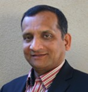

Title: Ultra HD - Roadmap of High Quality A/V Content to the HomeUltra HD content appears to be on the brink of replacing HD content and enter the mainstream as a newer and more sensational way of delivering media to consumers. Companies across the industry are coming together with the aim to streamline an approach to standards, consumer offering, and technologies. 4K resolution, High Dynamic Range, Wide Color Gamut, High Frame rates, and object based audio are some elements that contribute to the improved user experience. Listen to experts from various segments of the media industry to learn about the current status and the phasing of the deployment of these new technologies. The panelists will address a broad range of topics including products, services and workflows for the production and distribution of content. the status and directions of various relevant standards and promotional forums, consumer device features and experiences, and content formats and capabilities.Moderator: Patrick Griffis, Technology Vice President, Office of the CTO, Dolby Laboratories. Panelists: Don Eklund, Executive Vice President of Advanced Technologies, Sony Pictures Home Entertainment Thierry Fautier, Vice President of Video Strategy, Harmonic, Nandhu Nandhakumar, Senior Vice President, CTO Office, LG Electronics Jens Peter Wittenburg, Director Imaging Science Lab, Technicolor Format
|
Industry Forum

|
Patrick Griffis, Dolby Laboratoriess
As Technology Vice President in the CTO Office at Dolby Laboratories, Patrick Griffis is charged with helping define future technology strategy for the company which includes identifying and tracking key technical trends, performing technical due diligence, and supporting advanced technology initiatives for the company. He has been an active company spokesperson on the topic of next generation imaging and in particular, “better pixels” - a term he coined for High Dynamic Range plus Wide Color Gamut. Before joining Dolby, Pat spent 10 years at Microsoft leading global digital media standards strategy, including adoption of the Digital Living Network Alliance as a baseline media sharing standard in Windows 7 and standardization of Windows Media Video technology as an international SMPTE standard. Prior to Microsoft, Pat spent 15 years at Panasonic in senior management positions, including Vice President of Strategic Product Development at Panasonic Broadcast. Pat started his career at RCA, earning eight patents in TV product design. Pat has served two terms as President of the IEEE Consumer Electronics Society. A SMPTE Fellow, he serves on the SMPTE Executive Committee as Vice President, Education. He serves on the Board of the Ultra-HD Forum and is Dolby’s Board alternate in the UHD Alliance as well as Chair of the Compliance and Certification Working Group. Pat is member of the IBC Council, an industry executive advisory group as well as the Academy of Digital TV Pioneers. Pat holds a BSEE degree from Tufts University and an MSEE from Purdue University.
|
|
Thierry Fautier, Harmonic
As Vice President of Video Strategy at Harmonic, Thierry Fautier is in charge of defining and driving the execution of the long term strategy of Harmonic’s video business. Fautier is currently leading the commercial requirements for ABR Multicast in the Commercial Module group of the Digital Video Broadcasting Project (DVB) consortium. He is also the current President of the Ultra HD Forum, the global organization responsible for promoting market adoption of UHD by defining industry best practices for the phased introduction of the wide set of technologies that will facilitate the next-generation viewing experience. Fautier’s previous experience at Harmonic includes leadership positions in Solutions Marketing, where his area of responsibility covered Harmonic’s major markets, including broadcast, cable, telco, DTH and OTT, as well as multiscreen initiatives. Prior to joining Harmonic, he was Vice President of Marketing for Vsofts and held various positions at Philips in Research, Engineering and Marketing. Fautier was one of the primary drivers at Philips in the creation of MPEG technology and in the development of the first MPEG-2 STB system on chip solutions. An experienced speaker, he has presented at leading industry conferences throughout the world.
|
|
|  |
Nandhu Nandhakumar, LG Electronics
As Senior Vice President in the office of the CTO of LG Electronics Inc., Nandhu has been leading technology initiatives, partnerships and corporate venture capital investments in areas of long-term strategic interest to LG Electronics, such as connected entertainment, health, energy and vehicle. As the former founding head of LG’s Silicon Valley based Technology Center of America, he established LP arrangements with leading VC funds, and partnerships with university research centers and national government laboratories across a broad portfolio of technologies. Earlier, he served as CTO, VP Engineering and a Board Director of Triveni Digital, which develops and supplies products for the management and monitoring of metadata and data in broadcast DTV signals. He has also served on the faculties of the University of Texas, Austin and the University of Virginia, Charlottesville – where he taught graduate and undergraduate courses, supervised Ph.D. students, and conducted sponsored research in the areas of Computer Vision, Signal Processing, Robotics, and Machine Intelligence. He has authored more than a 100 refereed journal and conference publications, and holds several issued patents in these areas. Dr. Nandhakumar has a Master’s degree in Computer Engineering from the University of Michigan, Ann Arbor, and a Ph.D. in Electrical Engineering from UT Austin. He is a senior member of the IEEE, and serves on the board of directors and advisory committees of various industry organizations, startups, incubators, and academic institutions.
|
|
Don Eklund, Sony DADC US Inc.
Don Eklund, Senior Vice President New Format Promotion Sony Corporation of America has been a part of the launch of multiple consumer entertainment formats since starting his career at Sony. He developed and staffed the operation that launched DVD at Sony Pictures and went on to oversee the development of software tools and hardware systems which supported compression, authoring and quality control of Blu-ray. Don also participates in industry standards organizations and consortiums which focus on next generation entertainment. Don previously worked as a field engineer for JVC and Sony Electronics.
|
|
|
Jens Peter Wittenburg, Director, Imaging Science Lab, Technicolor Research & Innovation.
Jens Peter Wittenburg holds both a Masters and Doctorate degree in Electrical Engineering from Leibnitz University Hannover. Before joining Technicolor in 2002, Jens Peter conducted research on programmable and dedicated solutions for MPEG and other video processing systems at the University's Information Technology Lab. During his first years at Technicolor's Hanover Corporate Research center, he worked as a system architect, project manager and technology domain director on storage systems and signal processing related projects. Jens Peter's current position is the Director of the Imaging Science Lab at Technicolor’s Research and Innovation (R&I) division in Rennes, France. In this role, Jens Peter is responsible for portfolio management, technical directions, strategy, and business relevance for roughly one third of Technicolor’s ~200 person research organization. Projects in his lab span all sorts of video format evolutions, color science and video compression in particular. |